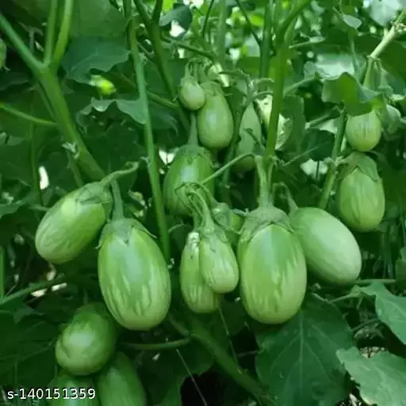

Fresh Fruits
The secret is using fresh seasonal
produce in combination with good
quality oils vinegars or dairy.
LEARN MORE

We have all been listening to our
mothers saying eat your vegtables
scientist also agree with this thing.
LEARN MORE
Vegetables
We have all been listening to our
mothers saying eat your vegtables
scientist also agree with this thing.
LEARN MORE
Salad Leaves
One way to motivate you to eat
more salad this summer is to have
tasty homemade dressing drizzled.
LEARN MORE